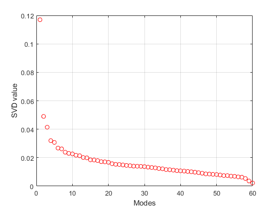
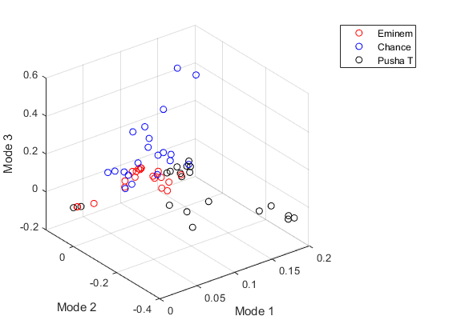

Contents
clc; clear all; close all;
Load music and compute spectrogram
pathTrain = 'songs\test2\train\*.mp3';
nClips = 10;
clipLength = 5;
[Train, fNameTrain] = spectro(pathTrain, nClips, clipLength);
Perform SVD on the spectrogram
[U, S, V] = svd(Train, 'econ');
diagS = diag(S)/sum(diag(S));
figure(1)
plot(diagS, 'ro');
grid on;
xlabel('Modes');
ylabel('SVD value');
figure(2)
plot3(V(1:(2*nClips), 1), V(1:(2*nClips), 2), V(1:(2*nClips), 3), 'ro');
grid on;
hold on;
plot3(V((2*nClips + 1):(4*nClips), 1), V((2*nClips + 1):(4*nClips), 2), ...
V((2*nClips + 1):(4*nClips), 3), 'bo');
plot3(V((4*nClips + 1):(6*nClips), 1), V((4*nClips + 1):(6*nClips), 2), ...
V((4*nClips + 1):(6*nClips), 3), 'ko');
legend('Eminem', 'Chance', 'Pusha T')
xlabel('Mode 1');
ylabel('Mode 2');
zlabel('Mode 3');
 
Load test
pathTest = 'songs\test2\test\*.mp3';
[Test, fNameTest] = spectro(pathTest, nClips, clipLength);
Build Classifier
feature = 8;
[U1, S1, V1, threshold12, threshold23, w, sort1, sort2, sort3] ...
= artist_trainer(Train, nClips, feature);
pval = w'*(U1'*Test);
resultL = length(pval);
result = strings(1, resultL);
for i = 1:length(pval)
pval1 = pval(i);
if pval1 >= threshold23
result(i) = "C";
elseif pval1 >= threshold12
result(i) = "E";
else
result(i) = "P";
end
end
answer = strings(1, resultL);
for i = 1:length(result)
if i <= resultL/3
answer(i) = "E";
elseif i <= resultL*2/3
answer(i) = "C";
else
answer(i) = "P";
end
end
compare = result == answer;
disp(compare);
accuracy = length(find(compare == 1))/length(result);
disp(accuracy)
function [Data, fName] = spectro(path, nClips, clipLength)
folder = dir(path);
nSongs = length(folder);
Data = [];
fName = [];
for i = 1:nSongs
fname = folder(i).name;
fName = [fName, convertCharsToStrings(fname)];
[y, Fs] = audioread([path(1:end -5), fname]);
y = (y(:, 1) + y(:, 2))/2;
s = y';
t = (1:length(s))/Fs;
lengthSong = t(end);
totalClips = lengthSong/clipLength;
clipSpace = totalClips/nClips;
tempData = [];
for j = 1:clipSpace:totalClips
sStart = floor((j - 1)*clipLength);
if j == 1
sStart = 1;
end
sEnd = sStart + clipLength;
clip = s(1, sStart*Fs : sEnd*Fs);
clipSpec = abs(spectrogram(clip));
clipSpec = reshape(clipSpec, ...
size(clipSpec, 1)*size(clipSpec, 2), 1);
tempData = [tempData, clipSpec];
end
Data = [Data, tempData - mean(tempData(:))];
end
end
function [U, S, V, threshold12, threshold23, w, sort1, sort2, ...
sort3] = artist_trainer(Data, nSample, feature)
[U, S, V] = svd(Data, 'econ');
n = 2*nSample;
Artist = S*V';
U = U(:, 1:feature);
A1 = Artist(1:feature, 1:n);
A2 = Artist(1:feature, (n + 1):(n + n));
A3 = Artist(1:feature, (n + n + 1):(n + n + n));
m1 = mean(A1, 2);
m2 = mean(A2, 2);
m3 = mean(A3, 2);
mOverall = (m1 + m2 + m3)./3;
Sw = 0;
for i = 1:n
Sw = Sw + (A1(:, i) - m1)*(A1(:, i) - m1)';
end
for i = 1:n
Sw = Sw + (A2(:, i) - m2)*(A2(:, i) - m2)';
end
for i = 1:n
Sw = Sw + (A3(:, i) - m3)*(A3(:, i) - m3)';
end
SB = ((m1 - mOverall)*(m1 - mOverall)' + (m2 - mOverall)*...
(m2 - mOverall)' + (m3 - mOverall)*(m3 - mOverall)')/3;
[V2, D] = eig(SB, Sw);
[~, ind] = max(abs(diag(D)));
w = V2(:,ind);
w = w/norm(w, 2);
v1 = w'*A1;
v2 = w'*A2;
v3 = w'*A3;
vM1 = mean(v1);
vM2 = mean(v2);
vM3 = mean(v3);
sort1 = sort(v1);
sort2 = sort(v2);
sort3 = sort(v3);
bot = length(sort3);
top = 1;
while sort3(bot) > sort1(top)
bot = bot - 1;
top = top + 1;
end
threshold12 = (sort3(bot) + sort1(top))/2;
bot = length(sort1);
top = 1;
while sort1(bot) > sort2(top)
bot = bot - 1;
top = top + 1;
end
threshold23 = (sort1(bot) + sort2(top))/2;
end
Columns 1 through 19
1 1 1 1 1 1 1 1 1 1 0 0 0 0 0 1 0 0 0
Columns 20 through 30
0 0 0 0 1 0 0 1 0 0 0
0.4333